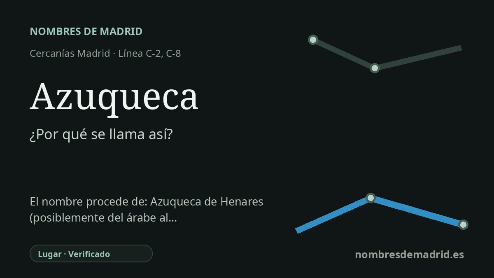

Publicado el · Investigación de Nombres de Madrid · Cómo verificamos cada origen · 7 fuentes consultadas
Respuesta rápida
La estación de Azuqueca recibe el nombre del municipio de Azuqueca de Henares. El topónimo se explica mejor a partir del árabe sukayka, un diminutivo que alude a un camino, caminito o callejuela en torno al cual se formó el asentamiento primitivo.
La historia del nombre
La estación de Azuqueca recibe el nombre de Azuqueca de Henares, el municipio de Guadalajara en el que se sitúa. La documentación ferroviaria oficial registra la estación como AZUQUECA, dentro del municipio de Azuqueca de Henares y del ámbito de Cercanías Madrid.
La capa más antigua del nombre no tiene relación con el ferrocarril. Toponomasticon Hispaniae, en una ficha redactada por J. A. Ranz Yubero con adiciones de E. Nieto Ballester, deriva Azuqueca del árabe sukayka, un diminutivo relacionado con un camino, caminito o callejuela. Según esta interpretación, el topónimo describiría la línea de paso o vía estrecha en torno a la cual se agruparon las primeras construcciones.
El nombre municipal completo añade de Henares, por el río Henares. Toponomasticon Hispaniae explica Henares como un hidrónimo romance relacionado con henar, es decir, un lugar poblado de heno o prados de heno. El nombre completo une, por tanto, dos capas distintas: un topónimo de origen árabe para el núcleo y una referencia posterior al valle fluvial.
La localidad está históricamente vinculada a los caminos. La ficha de Toponomasticon señala restos de poblamiento anterior, pero considera probable una fundación de época árabe; también recoge formas documentales como Azuqueca en una bula papal del 6 de junio de 1192, Açuqueca en 1528 y Azuqueca de Nares en el Catastro de Ensenada de 1751. Las Relaciones Topográficas de 1575 ya describen Azuqueca como aldea dependiente de Guadalajara y delimitan su término entre la parte del río Henares y caminos y ventas cercanas.
Existe una explicación árabe competidora que relaciona el nombre con un mercado o feria, pero la fuente especializada más fuerte la considera menos verosímil que la interpretación de 'camino pequeño' o 'callejuela'. Un artículo posterior de Ranz Yubero estudia además posibilidades relacionadas con obras de agua, acequias o pequeños canales, aunque reconoce dificultades fonéticas. La interpretación mejor respaldada es que Azuqueca es un topónimo de origen árabe, mejor explicado como sukayka, diminutivo referido a un pequeño camino o paso, con la advertencia de que la bibliografía antigua propuso también 'mercadillo' o explicaciones hidráulicas.